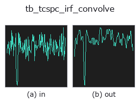

typed op• Data kinds: counts → counts
• Call: fullseye.apply(img, "tb_tcspc_irf_convolve", a=0.5, b=0.5) (2-D model = एक image + दो scalar knobs a,b∈[0,1])

*Figure synthetic 128×128 input पर सच में चलाकर मिला output है। बाईं ओर input, दाईं ओर output। Point clouds ऊपर से देखे गए scatter के रूप में (brightness = z), 1-D series line के रूप में, volumes z दिशा में maximum-intensity projection के रूप में, videos बीच के frame के रूप में, complex images amplitude के रूप में, और जो return values चित्र नहीं बन सकते वे स्वयं values के रूप में दिखाए जाते हैं।*
Knob a को बदलकर (0.1 / 0.5 / 0.9, दूसरा knob default पर):
▸ tb_tcspc_irf_convolve: knob a को बदलने का figure (docs site)
Knob b को बदलकर (0.1 / 0.5 / 0.9, दूसरा knob default पर):
▸ tb_tcspc_irf_convolve: knob b को बदलने का figure (docs site)
Stages (पहले आने वाले ops → यह op, बाएँ से क्रम में):
▸ tb_tcspc_irf_convolve: stages का figure (docs site)
दूसरी images पर भी (synthetic scene / photo / coins। ऊपर की row में inputs, नीचे की row में उनके outputs। Knobs default पर):
▸ tb_tcspc_irf_convolve: दूसरी images पर output (docs site)
arrival-time histogram को instrument response (timing jitter) से blur करता है।
> नीचे का विस्तृत विवरण मूल text में है — सारांश और headings का अनुवाद हो चुका है।
The temporal analogue of a PSF convolution: a detector's timing uncertainty (SPAD jitter + TDC quantisation + laser pulse width) smears every arrival time by the instrument response function, here a Gaussian of full width at half maximum *irf_fwhm_ps*. The kernel is the exact bin integral of that Gaussian (erf differences), normalised to sum 1, truncated at +-truncate*sigma and forced to odd length so the convolution is centred.
Ground truth: convolving a unit spike in the middle of a 256-bin window with irf_fwhm_ps = 500 at bin_ps = 50 leaves the centroid exactly where it was (measured shift 0.0 ps — the kernel is symmetric) and gives a profile whose measured FWHM is 501.22 ps. That 0.24% excess over 500 is the *measurement*, not the kernel: tcspc_stats finds the half-maximum crossings by linear interpolation between bins, which slightly overestimates the width of a Gaussian.
Total counts are preserved *except* at the window edges, where mode='same' discards the tail that falls outside — measured loss exactly 0 for that centred spike, but a genuine loss for a pulse within a few sigma of either end.
Returns a float64 1-D histogram of the same length as *hist*.
Raises ValueError: negative, non-finite or non-1-D *hist*, a non-positive *bin_ps* / *irf_fwhm_ps* / *truncate*, an IRF sigma below 1e-3 bins (the kernel would be a delta and the op a no-op — say so instead of pretending to blur), and a kernel that would be longer than the MAX_BINS cap.
Typed bridge of the photon op tcspc_irf_convolve into the 2-D evolution registry: the same implementation, called under the op(v, a, b) convention. a drives bin_ps (default 100) and b drives irf_fwhm_ps (default 200).
• Sample data catalog (DL URL / license) — 2-D के लिए skimage.data (BSD/public) + synthetic, 3-D के लिए real data sources (Stanford/PDS आदि) के DL URL।
• Operators का स्रोत और संदर्भ — इस op family के मूल research/methods के स्रोत।
नीचे का program सच में चलता है, यह जाँचा गया है (figure वाला ही input)। Studio की help में यह block buttons बन जाता है, जिनसे इसे वहीं load करके चलाया जा सकता है।
img_to_counts 0.50 0.50 tb_tcspc_irf_convolve 0.50 0.50
▸ यह pipeline load करें · Load करके चलाएँ
नीचे के उदाहरण मूल ledger op tcspc_irf_convolve को call करते हैं। यह bridge op वही implementation है, बस fn(v, a, b) convention के अनुसार ढाला गया है, इसलिए व्यवहार वैसा ही लागू होता है (केवल call का रूप अलग है)।
• photon_timeresolved — py -3.11 examples/photon_timeresolved.py
counts को input के रूप में लेते हैं)identity · tb_spad_deadtime_apply · tb_spad_deadtime_correct · tb_tcspc_coates_correct · tb_tcspc_background_subtract · tb_dtof_depth · tb_countrate_to_counts · tb_counts_to_countrate
typed)tb_points_to_voxel · tb_estimate_point_normals · tb_iss_keypoints · tb_project_points · tb_render_point_depth · tb_statistical_outlier_removal · tb_radius_outlier_removal · tb_voxel_grid_downsample
*Provenance: ops.py — 2D operator registry. यह per-op note tools/opdocs.py md से अपने-आप generate होता है (हाथ से edit न करें)।*
© 2026 Kazufumi Furuse — Fullseye operator documentation. Licensed under Apache-2.0.